radius: {{convert|69911|km|mi|0|abbr|=|unit}} diameter:
{{plainlist |
* |convert|1.8982e27|kg|lb|sigfig|=|5|abbr|=|unit|
* |val|317.8|u|=|Earths|
* 1/1047 Sun|ref| name=ssd-constants|{{cite web |title=Astrodynamic Constants |publisher=JPL Solar System Dynamics |date=February 27, 2009 |url=http://ssd.jpl.nasa.gov/?constants |accessdate=August 8, 2007}}|/ref|}} {{convert|1.8982e27|kg|lb|sigfig|=|5|abbr|=|unit}} * {{val|317.8|u|=|Earths}} * 1/1047 Sun

radius: {{convert|58232|km|mi|0|abbr|=|unit}} diameter:
{{plainlist |
* |val|5.6834e26|u|=|kg|
* |val|95.159|u|=|Earths|}} {{val|5.6834e26|u|=|kg}} * {{val|95.159|u|=|Earths}}

radius: {{nowrap|val|fmt|=|commas|25362|7|u|=|km}} {{val|fmt|=|commas|25362|7|u|=|km}} {{efn|name|=|atmospheric pressure}} diameter:
{{val|8.6810|0.0013|e|=|25|u|=|kg}} br / 14.536 Earths br /
[[standard gravitational parameter|GM]]= {{nowrap|val|fmt|=|commas|5793939|13|u|=|kmsup3/sup/ssup2/sup}} {{val|fmt|=|commas|5793939|13|u|=|kmsup3/sup/ssup2/sup}}
{{#time:F j, Y|#property:P575}} {{#property:P575}}

radius: {{nowrap|val|fmt|=|commas|24622|19|u|=|km}} {{val|fmt|=|commas|24622|19|u|=|km}} diameter:
{{val|1.02413|e|=|26|u|=|kg}} br / 17.147 Earths br / 5.15 {{e|-5}} Suns
23.09.1846
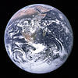
radius: {{convert|6371.0|km|mi|comma|=|gaps|abbr|=|on|disp|=|x| small(|)/small}} diameter:
{{val|5.97237|e|=|24|u|=|kg}} small( {{val|1.31668|e|=|25|u|=|lb}} )/small br / small( {{val|3.0|e|=|-6|ul|=|solar mass}} )/small

radius: {{plainlist |
* |nowrap|val|fmt|=|commas|6051.8|1.0|u|=|km|ref| name="Seidelmann2007" |
* |val|0.9499|u|=|Earths|}} {{nowrap|val|fmt|=|commas|6051.8|1.0|u|=|km}} {{val|fmt|=|commas|6051.8|1.0|u|=|km}} * {{val|0.9499|u|=|Earths}} diameter:
{{plainlist |
* |val|4.8675|e|=|24|u|=|kg|ref| name="Konopliv1999" |
* 0.815 Earths}} {{val|4.8675|e|=|24|u|=|kg}} * 0.815 Earths

radius: {{convert|3389.5|±|0.2|km|mi|1|comma|=|gaps|abbr|=|on|disp|=|x|efn|name|=|best-fit ellipsoid| |ref| name="Seidelmann2007" |br /small(|)/small}} {{efn|name|=|best-fit ellipsoid}} br /small( diameter:
{{val|6.4171|e|=|23|u|=|kg}} br /small(0.107 Earths)/small

radius: {{val|2634.1|0.3|u|=|km}} (0.413 Earths) diameter:
{{val|1.4819|e|=|23|u|=|kg}} (0.025 Earths)
07.01.1610
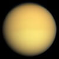
radius: {{val|2574.73|0.09|u|=|km}} (0.404 [[Earth]]s) (1.480 [[Moon]]s) diameter:
{{val|1.3452|0.0002|e|=|23|u|=|kg}} br /(0.0225 Earths) (1.829 Moons)
25.03.1655

radius: {{plainlist |
* |nowrap|val|fmt|=|commas|2439.7|1.0|u|=|km|ref| name="nasa" |ref| name="Seidelmann2007" |
* |val|0.3829| Earths}} {{nowrap|val|fmt|=|commas|2439.7|1.0|u|=|km}} {{val|fmt|=|commas|2439.7|1.0|u|=|km}} * {{val|0.3829}} Earths diameter: {{val|4880|u|=|km}}
{{plainlist |
* |val|3.3011|e|=|23|u|=|kg|ref| name="Mazarico2014" |
* 0.055 Earths}} {{val|3.3011|e|=|23|u|=|kg}} * 0.055 Earths
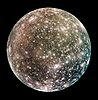
radius: {{val|2410.3|1.5|u|=|km}} (0.378 Earths) diameter:
{{val|1.075938|0.000137|e|=|23|u|=|kg}} (0.018 Earths)
07.01.1610

radius: {{val|1821.6|.5|u|=|km}} (0.286 Earths) diameter:
{{val|8.931938|.000018|e|=|22|u|=|kg}} (0.015 Earths)
08.01.1610

radius: {{nowrap |val |1737.4 |u|=|km|nbsp |2|smaller |br /(0.2727 of Earth's)|ref| name="W06"|ref| name="NSSDC"|ref|{{cite journal |last1=Smith |first1=David E. |last2=Zuber |first2=Maria T. |last3=Neumann |first3=Gregory A. |last4=Lemoine |first4=Frank G. |title=Topography of the Moon from the Clementine lidar |journal=[[Journal of Geophysical Research]] |date=1 January 1997 |volume=102 |issue=E1 |page=1601 |doi=10.1029/96JE02940 |bibcode=1997JGR...102.1591S|hdl=2060/19980018849|hdl-access=free |url=https://semanticscholar.org/paper/9cdbb161f908e6cc4e5c55c4daee9f766743c400 }}|/ref}} {{val |1737.4 |u|=|km}} {{nbsp |2}} {{smaller |br /(0.2727 of Earth's)}} diameter:
{{nowrap |val |7.342 |e|=|22 |u|=|kg|nbsp |2|smaller |br /(|val |0.012300| of Earth's)|ref| name="W06"|ref| name="NSSDC"}} {{val |7.342 |e|=|22 |u|=|kg}} {{nbsp |2}} {{smaller |br /(|val |0.012300| of Earth's)|ref| name="W06"|ref| name="NSSDC"}} {{val |0.012300}} of Earth's) {{Sfn|Terry|2013|p|=|226}}

radius: {{val|1560.8|.5|u|=|km}} (0.245 [[Earth]]s) diameter:
{{val|4.799844|.000013|e|=|22|u|=|kg}} (0.008 Earths)
08.01.1610
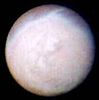
radius: {{val|1353.4|0.9|u|=|km}} ( {{Earth radius|0.2122}} ) diameter:
{{val|2.1390|0.0028|e|=|22|u|=|kg}} br( {{val|0.00359|u|=|Earths}} )
10.10.1846

radius: {{plainlist |
* |nowrap|val|fmt|=|commas|1188.3|0.8|u|=|km|ref| name = "Pluto System after New Horizons"|{{Cite journal|last=Stern |first=S. A. |last2=Grundy |first2=W. |last3=McKinnon |first3=W. B. |last4=Weaver |first4=H. A. |last5=Young |first5=L. A.|title=The Pluto System After New Horizons|journal=Annual Review of Astronomy and Astrophysics |volume=2018 |pages=357–392 |arxiv=1712.05669 |year=2017 |doi=10.1146/annurev-astro-081817-051935 }}|/ref|ref| name="Nimmo2017"|{{cite journal |last1=Nimmo |first1=Francis |displayauthors=etal |title=Mean radius and shape of Pluto and Charon from New Horizons images|journal=Icarus |date=2017 |volume=287 |pages=12–29 |doi=10.1016/j.icarus.2016.06.027|bibcode=2017Icar..287...12N |arxiv=1603.00821}}|/ref|
* 0.1868 [[Earth radius|Earths]]}} {{nowrap|val|fmt|=|commas|1188.3|0.8|u|=|km}} {{val|fmt|=|commas|1188.3|0.8|u|=|km}} * 0.1868 [[Earth radius|Earths]] diameter:
{{plainlist |
* |val|1.303|0.003|e |=| 22|u|=|kg|ref| name="Stern2015"|{{cite journal |last1=Stern |first1=S. A. |displayauthors=etal |title=The Pluto system: Initial results from its exploration by New Horizons |journal=[[Science (journal)|Science]] |date=2015 |volume=350 |issue=6258 |pages=249–352 |doi=10.1126/science.aad1815 |bibcode=2015Sci...350.1815S |pmid=26472913 |arxiv=1510.07704}}|/ref|!-- Calculated from GM=869.6 ± 1.8 km3 s–2 --|
* |val|0.00218|u|=|[[Earth mass|Earths]]|fmt|=|none|
* 0.177 [[Moon mass|Moons]]}} {{val|1.303|0.003|e |=| 22|u|=|kg}} * {{val|0.00218|u|=|[[Earth mass|Earths]]|fmt|=|none}} * 0.177 [[Moon mass|Moons]]
18.02.1930
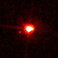
radius: {{val|1163|6|u|=|km}} diameter: {{val|2326|12|u|=|km}}
{{plainlist |
* |val|1.66|0.02|e|=|22|u|=|kg|ref| name="Brown Schaller 2007" |
* 0.0028 [[Earth mass|Earths]]
* 0.23 [[Moon mass|Moons]]}} {{val|1.66|0.02|e|=|22|u|=|kg}} * 0.0028 [[Earth mass|Earths]]
* 0.23 [[Moon mass|Moons]]
05.01.2005

radius: {{val|798|6|u|=|km}} per above to {{val|816|u|=|km}} if ring contributes 5% of brightness br {{val|620|+34|-29|u|=|km}} (Herschel) br690 km diameter:
{{val|4.006|0.040|e|=|21|u|=|kg}} br {{val|0.00066|u|=|[[Earth mass|Earths]]}}
2004 December 28 (Brown et al.); 2005 July 27 (Ortiz et al.)

radius: {{val|788.4|0.6|u|=|km}} ( {{val|0.1235|u|=|Earths}} ) diameter:
{{val|3.400|0.061|e|=|21|u|=|kg}}
11.01.1787

radius: diameter: {{val|1527.6|2.0|u|=|km}}
{{val|2.306518|0.000353|e|=|21|u|=|kg}} (~3.9 {{e|-4}} Earths)
23.12.1672

radius: {{val|761.4|2.6|u|=|km}} ( {{val|0.1194|u|=|Earths}} ) diameter:
{{val|3.076|0.087|e|=|21|u|=|kg}}
11.01.1787

radius: {{val|736.5|2.8|u|=|km}} diameter: {{val|1469.0|5.6|u|=|km}}
{{val|1.805635|0.000375|e|=|21|u|=|kg}}
25.10.1671


radius: diameter: {{val|1230|50|ul|=|km}}
{{val|1.75|0.07|e|=|21|u|=|kg}}
17 July 2007 {{efn|Discovery was announced two years later on 7 January 2009.}}

radius: {{val|606.0|0.5|u|=|km}} {{nowrap|(0.095 Earths, 0.51 Plutos)}} diameter:
{{val|1.586|0.015|e|=|21|u|=|kg}} br( {{val|2.66|e|=|-4|u|=|Earths}} )br(12.2% of Pluto)
22.06.1978

radius: {{val|584.7|2.8|u|=|km}} (0.092 Earths) diameter:
{{val|1.275|0.028|e|=|21|u|=|kg}}
24.10.1851
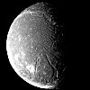
radius: {{val|578.9|0.6|u|=|km}} ( {{val|0.0908|u|=|Earths}} ) diameter:
{{val|1.251|0.021|e|=|21|u|=|kg}}
24.10.1851

radius: {{val|561.4|0.4|u|=|km}} diameter: {{val|1122.8|0.8|u|=|km}}
{{val|1.095452|0.000168|e|=|21|u|=|kg}} (1.834 {{e|-4}} Earths)
21.03.1684

radius: {{val|560.5|0.6|u|=|km}} diameter: {{val|1121|1.2|u|=|km}}
{{val|1.40|0.21|e|=|21|u|=|km}}
05.06.2002

radius: {{val|531.1|0.6|u|=|km}} diameter: {{val|1062.2|1.2|u|=|km}} (0.083 Earths) {{sfn|Roatsch Jaumann et al.|2009|p|=|765|loc|=|Tables 24.1–2}}
{{val|6.17449|0.00132|e|=|20|u|=|kg}} {{sfn|Jacobson Antreasian et al.|2006}} (1.03 {{e|-4}} Earths)
21.03.1684


radius: {{val|469.73|u|=|km}} diameter: {{val|939.4|0.2|u|=|km}}
{{val|9.3835|e|=|20|u|=|kg|0.0001}} br / {{val|0.00015|u|=|[[Earth mass|Earths]]}} br /0.0128 [[Moon]]s
01.01.1801


radius: diameter: {{val|846|21|u|=|km}} (Salacia alone) br / {{val|893|22|u|=|km}} (combined volume of Salacia/Actaea) br / {{val|854|45|u|=|km}} (equal albedos)
{{val|4.922|0.071|e|=|20|u|=|kg}} (system) br / {{val|4.38|0.16|e|=|20|u|=|kg}} (system mass)
22.09.2004


radius: {{val|252.1|0.2|u|=|km}} ( {{val|0.0395}} Earths, {{val|0.1451}} Moons) diameter:
{{val|1.08022|0.00101|e|=|20|u|=|kg}} (1.8 {{e|-5}} Earths)
28.08.1789

radius: {{val|235.8|0.7|u|=|km}} ( {{val|0.03697|u|=|Earths}} ) diameter:
{{val|6.4|0.3|e|=|19|u|=|kg}}
16.02.1948

radius: diameter: {{val|434|14|u|=|km}}
{{val|8.32|0.8|e|=|19|u|=|kg}} (representative)
12.04.1849
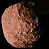
radius: {{val|210|7|u|=|km}} diameter:
{{val|4.4|e|=|19|u|=|kg}} ( {{val|7.3672|e|=|-6|u|=|Earths}} ) {{refn | name|=|"mass calc" | group |=| lower-alpha | The mass was calculated by multiplying the volume from Stooke (1994)|ref| name="Stooke1994" | by the assumed density of 1,300 kg/msup3/sup. If one uses slightly larger dimensions from the earlier papers the mass will increase to 5|e|19| kg.|ref| name="jplssd" |}} by the assumed density of 1,300 kg/msup3/sup. If one uses slightly larger dimensions from the earlier papers the mass will increase to 5 {{e|19}} kg.
16.06.1989

radius: {{val|198.2|0.4|u|=|km}} diameter:
{{val|3.7493|0.0031|e|=|19|u|=|kg}} br(6.3 {{e|-6}} Earths)
17.09.1789


radius: {{val|106.5|0.7|u|=|km}} diameter:
{{val|8.292|0.010|e|=|18|u|=|kg}}
17 March 1899 & 16 August 1898

radius: 97 ± 5.4 km diameter:
~4.2 {{e|18}} kg (estimate) {{refn | name |=| mass estimate | group |=| lower-alpha | The mass estimate is based on the assumed density of 1.2 g/cm³, and a volume of 3.5 |e|6| km³ obtained from a detailed shape model in Stooke (1994).|ref| name="Stooke1994" |}} {{e|6}} km³ obtained from a detailed shape model in Stooke (1994).
24.05.1981


radius: {{val|89.5|1.4|u|=|km}} {{sfn|Thomas|2010}} diameter:
{{val|1.8975|0.0012|e|=|18|u|=|kg}} {{sfn|Thomas|2010}}
15.12.1966

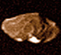
radius: {{val|83.5|2.0|u|=|km}} {{sfn|Thomas Burns et al.|1998}} diameter:
{{val|2.08|0.15|e|=|18|u|=|kg}} {{sfn|Anderson Johnson et al.|2005}}
09.09.1892
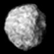
radius: 81 ± 2 km {{sfn|Karkoschka, Voyager|2001}} diameter:
~2.9 {{E-sp|18}} [[kilogram|kg]] {{efn|name|=|calculated}}
30.12.1985


radius: {{val|58.1|1.8|u|=|km}} {{sfn|Thomas|2010}} diameter:
{{val|5.266|0.006|e|=|17|u|=|kg}} {{sfn|Thomas|2010}}
18.12.1966

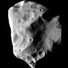
radius: {{nowrap|49 ± 1 km}} diameter:
{{nowrap|1.700 ± 0.017|e|18| kg}} {{e|18}} kg
15.11.1852


radius: {{val|43.1|2.7|u|=|km}} {{sfn|Thomas|2010}} diameter:
{{val|1.595|0.015|e|=|17|u|=|kg}} {{sfn|Thomas|2010}}
01.10.1980

radius: {{val|40.7|1.5|u|=|km|s|=| }} {{sfn|Thomas|2010}} diameter:
{{val|1.371|0.019|e|=|17|u|=|kg}} {{sfn|Thomas|2010}}
01.10.1980


radius: {{val|21.5|2.0|u|=|km}} {{sfn|Thomas Burns et al.|1998}} diameter:
{{val|1.2|e|=|17|u|=|kg}}
04.03.1979


radius: diameter: {{val|18.3|u|=|km}} {{small|(volume equivalent)}} br /''Ultima'' {{val|15.9|u|=|km}} br /''Thule'' {{val|12.9|u|=|km}}
26.06.2014
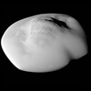
radius: {{val|15.1|0.9|u|=|km|s|=| }} {{sfn|Thomas|2010}} diameter:
{{val|6.60|0.45|e|=|15|u|=|kg}} {{sfn|Thomas|2010}}
01.10.1980


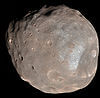
radius: {{val|11.2667|u|=|km}} br/( {{val|1.76941|u|=|[[milli-|m]]Earths}} ) diameter:
{{val|1.0659|e|=|16|u|=|kg}} br/( {{val|1.78477|u|=|nEarths}} )
18.08.1877


{{val|1.65e16|u|=|kg}} {{refn|group|=|notes|Derived from the published value of ''GMsubKerberos/sub'' |=| |val|0.0011|0.0006|u|=|kmsup3/sup/ssup2/sup| |ref|{{cite journal|last1=Brozović|first1=Marina|last2=Showalter|first2=Mark R.|last3=Jacobson|first3=Robert A.|last4=Buie|first4=Marc W.|title=The orbits and masses of satellites of Pluto|journal=Icarus|date=January 2015|volume=246|pages=317–329|doi=10.1016/j.icarus.2014.03.015|bibcode = 2015Icar..246..317B }}|/ref| and the relationship ''MsubKerberos/sub'' |=| |sfrac|''GMsubKerberos/sub'' |''[[Gravitational constant|G]]''|}} {{=}} {{val|0.0011|0.0006|u|=|kmsup3/sup/ssup2/sup}} and the relationship ''MsubKerberos/sub'' {{=}} {{sfrac|''GMsubKerberos/sub'' |''[[Gravitational constant|G]]''}}
28 June 2011 br (verified 20 July 2011)

radius: 6.2 ± 0.18 km br /(0.97316 [[milli-|m]]Earths) diameter:
{{val|1.4762|e|=|15|u|=|kg}} br /(0.247179 [[nano-|n]]Earths)
12.08.1877


radius: diameter: {{val|11|u|=|km}}
{{val|2.2|e|=|14|ul|=|kg}}
1758 (first ''predicted'' perihelion)


radius: diameter: {{val|2.45}} km br /5.4 km {{small|(dated)}}
{{val|5.05|e|=|13|u|=|kg}}
04.01.1989


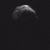
radius: diameter: {{val|1.1|ul|=|km}} br / {{val|1.25|0.12|u|=|km}} br / {{val|2.00|0.20|u|=|km}}
{{val|4|e|=|12|ul|=|kg}} {{efn|name|=|estimate}}
23.02.1950

radius: diameter: {{val|0.865|0.015|ul|=|km}} br / {{val|0.87|u|=|km}} br / {{val|0.90|0.14|u|=|km}} br / {{val|0.92|0.12|u|=|km}} br / {{val|0.980|0.029|u|=|km}} br / {{val|1.13|0.03|u|=|km}}
{{val|4.5|e|=|11|u|=|kg}}
10.05.1999

radius: diameter: 0.72 km {{small|(est. at [[Geometric albedo|0.20]])}} br /0.818 km {{small|(calculated)}}
05.05.2014


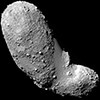
radius: diameter: 313 m br /330 m br /350 m
{{val|3.51|0.105|e|=|10|ul|=|kg}} br / {{val|3.58|0.18|e|=|10|u|=|kg}}
26.09.1998


radius: diameter: {{val|102.93|3.81|ul|=|km}} br / {{val|104.3|u|=|km}} br / {{val|121.55|1.60|u|=|km}} br / {{val|124|u|=|km}} br / {{val|135.07|2.1|u|=|km}} br / {{val|137.794|u|=|km}} br / {{val|138.000|19.37|u|=|km}}
{{val|4.64e18|0.02|ul|=|kg}}
10.04.1880

radius: diameter: {{val|1.77|0.1}} [[Kilometre|km]] br / {{val|1.87|0.05}} km br / {{val|1.96|0.06}} km br / {{val|2.5}} km br / {{val|2.56|0.15}} km
14.09.1951


radius: diameter: {{val|1.0}} km {{efn|name|=|Gehrels}} br / {{val|1.03|0.04}} km br / {{val|1.27}} km br / {{val|1.417|0.123}} km br / {{val|1.44|0.26}} km
27.06.1949